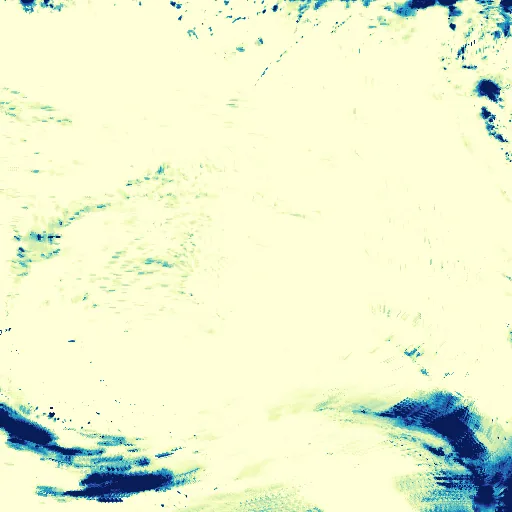

Benchmark / Near-lossless / imerg-pcp-12 / imerg-pcp-12-13
imerg-pcp-12-13
southeast-pacific · 2023-10-27 · sample details
Each point shows a configuration at this budget level. The line shows the best observed trade-offs. The All corpora view pools size and decode time across samples for configurations completed on every corpus with results at this level. Broken promises are listed below.
